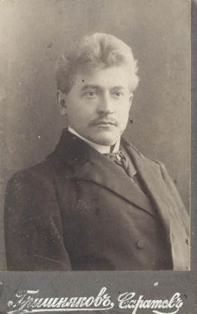

Глава VIII
Мой дед Сергей: последнее довоенное поколение
Мой дед Сергей Евгеньевич Каменский родился 6 сентября 1908 года. Сегодня это почти всё, что я знаю о нём твёрдо. Он был сыном Евгения Ивановича Каменского и Анны Константиновны Фисейской-Каменской. В нём соединились две важные линии этой книги — Каменские и Фисейские.
У меня пока нет его фотографии. Нет точной даты смерти. Нет места гибели. Нет письма, голоса, подробностей последнего пути. Поэтому эта глава начинается не с портрета, а с его отсутствия.


Мои прадедушка и прабабушка — Евгений Иванович Каменский и Анна Константиновна Каменская, урождённая Фисейская.
Это отсутствие тоже говорит о времени. У Евгения Ивановича сохранилось лицо. У Анны Константиновны сохранилось лицо. А Сергей Евгеньевич, их сын, уже стоит на границе другой эпохи — той, где происхождение становилось опасным, фотографии терялись, документы исчезали, а семейная память уходила в молчание.
Сергей Евгеньевич родился до революции, был ребёнком в годы слома, взрослел уже в Советской России. По семейным сведениям, он погиб в 1941 году. Пока эта дата остаётся для меня короткой и почти безжалостной строкой. За ней — война и оборванная жизнь.
Но в истории семьи он важен не только своей гибелью. Он — отец следующего поколения: Валентина Сергеевича, Владимира Сергеевича, Александра Сергеевича и Лилии Сергеевны. Через Владимира Сергеевича, моего отца, эта линия дошла до меня.
После гибели Сергея Евгеньевича Марья Кондратьевна осталась с детьми. На неё легли война, вдовство, быт, страх и необходимость жить дальше. Позднее она вышла замуж снова. В этой новой семейной линии появился Вячеслав Кравцов, 1947 года рождения, папин брат по матери.
Для меня эта деталь важна не только как родственная запись. После гибели Сергея Евгеньевича жизнь семьи не остановилась. Марья Кондратьевна продолжала держать дом, растить детей и вести семью дальше уже в послевоенном мире.